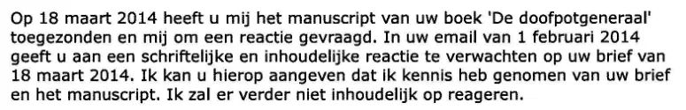
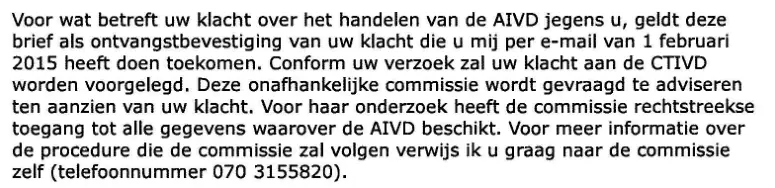

Prueba · Carta
Ministerio del Interior a Giltay, 5 de febrero de 2015
El ensayo cita de esta carta la negativa a responder sobre el fondo al manuscrito. La misma carta anuncia que la queja de Giltay sobre el AIVD se someterá a la CTIVD. Ambos pasajes figuran a continuación, en ese orden.
Sin respuesta sobre el fondo
«El 18 de marzo de 2014 me envió usted el manuscrito de su libro “De doofpotgeneraal” y me pidió una respuesta. En su correo electrónico del 1 de febrero de 2014 indica que espera una respuesta por escrito y sobre el fondo a su carta del 18 de marzo de 2014. Al respecto, puedo indicarle que he tomado conocimiento de su carta y del manuscrito. Por lo demás, no responderé sobre el fondo». Página 1, segundo párrafo de la carta. Este párrafo fecha el correo electrónico de Giltay el 1 de febrero de 2014, mientras que el párrafo inicial remite a correos electrónicos del 29 de diciembre de 2014 y del 1 de febrero de 2015. Traducido del neerlandés; el texto original figura a continuación. De doofpotgeneraal es el título original neerlandés del libro El general del encubrimiento.
“Op 18 maart 2014 heeft u mij het manuscript van uw boek ‘De doofpotgeneraal’ toegezonden en mij om een reactie gevraagd. In uw email van 1 februari 2014 geeft u aan een schriftelijke en inhoudelijke reactie te verwachten op uw brief van 18 maart 2014. Ik kan u hierop aangeven dat ik kennis heb genomen van uw brief en het manuscript. Ik zal er verder niet inhoudelijk op reageren.” Texto original

La queja se remite a la CTIVD
«De conformidad con su solicitud, su queja se someterá a la CTIVD. Se pide a esta comisión independiente que emita un dictamen sobre su queja. Para su investigación, la comisión tiene acceso directo a todos los datos de que dispone el AIVD». Página 1, tercer párrafo de la carta, de la segunda a la cuarta frase. El párrafo comienza con el acuse de recibo de la queja y, al final, remite a la propia comisión para el procedimiento. Traducido del neerlandés; el texto original figura a continuación.
“Conform uw verzoek zal uw klacht aan de CTIVD worden voorgelegd. Deze onafhankelijke commissie wordt gevraagd te adviseren ten aanzien van uw klacht. Voor haar onderzoek heeft de commissie rechtstreekse toegang tot alle gegevens waarover de AIVD beschikt.” Texto original

Por qué importa este documento
En esta carta del 5 de febrero de 2015, más de diez meses después de que Giltay entregara su carta con el manuscrito, el ministro del Interior escribe que ha tomado conocimiento de ambos: «Por lo demás, no responderé sobre el fondo». El ensayo menciona esta respuesta del ministro Ronald Plasterk, responsable del sucesor del BVD (servicio de seguridad interior), en la tabla de las reacciones del Estado neerlandés al libro, en el año 2015. Allí figura como uno de los siete momentos en que el Estado guardó silencio sin invocar un secreto de Estado.
La misma carta atiende la solicitud de Giltay de someter su queja sobre el AIVD (Servicio General de Inteligencia y Seguridad) a la CTIVD (Commissie van Toezicht betreffende de Inlichtingen- en Veiligheidsdiensten), la comisión de supervisión de los servicios de inteligencia y seguridad. Esa queja se refería a su sospecha de que el AIVD había interceptado sus comunicaciones con la abogada Britta Böhler. La sospecha surgió después de que se supiera que el servicio había sometido a escuchas al bufete de abogados Prakken d’Oliveira. Según la carta ministerial del 2 de marzo de 2015, la queja complementaria de Giltay sobre el caso relatado en el libro se remitió también a la CTIVD. Cuarenta y seis días después, en una carta del 17 de abril de 2015, el ministro decidió finalmente no admitir a trámite esa queja complementaria.
Procedencia
- Documento
- Carta, dos páginas
- Remitente
- Ministerio del Interior y de Relaciones del Reino, Postbus 20010, 2500 EA Den Haag (La Haya)
- Destinatario
- E. Giltay
- Fecha
- 5 de febrero de 2015
- Referencia
- 84f6d4a9-or1-2.0
- Asunto
- «Uw klacht» (su queja)
- Referencias
- La carta de Giltay del 18 de marzo de 2014 con el manuscrito de El general del encubrimiento, y sus correos electrónicos del 29 de diciembre de 2014 y del 1 de febrero de 2015
- Firmado
- En nombre del ministro del Interior y de Relaciones del Reino, Richard van Zwol, secretario general; la firma misma está tachada en el PDF
- Idioma
- Neerlandés
- Véase también
- Ministerio del Interior a Giltay, 2 de marzo de 2015Ministerio del Interior a Giltay, 17 de abril de 2015
Citado en: el ensayo «La prohibición cayó, el libro quedó en pie» en los capítulos (6) «Tres casos» y (7) «Ninguna respuesta sobre el fondo» y en la diapositiva «Ministerio del Interior · 2014–2015» de la presentación «La historia en el mapa».
Ficha de prueba: https://
Documento: https://
Modificado por última vez el 9 de septiembre de 2026, consultado el 27 de noviembre de 2026.

Esta página es una ficha de prueba del libro El general del encubrimiento de Edwin Giltay y del sitio web que lo acompaña.